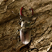
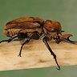
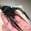
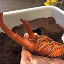

-

蟲說雜談
一隻甲蟲的秘密裝備清單
從帥氣的頭角到開蓋式的翅膀，每一個部位都有專屬功能。甲蟲的身體就是一整套裝備設計，帥氣又實用！
-

甲蟲檔案
M屬-兜蟲界的橫綱戰士
象兜有著圓潤的體型與短角，被譽為昆蟲界的奇異果，外型可愛卻藏著強大的力量。
-

飼養攻略
兩種生命型態，兩種照養邏輯：甲蟲飼養完全攻略
你知道嗎？甲蟲的一生分為「幼蟲期」與「成蟲期」，就像完全不同的兩種生物。幼蟲住在土裡、靠腐植質長大；成蟲則出來展現色彩與力量，吃甜食、飛翔、繁殖。掌握這兩個階段的需求差異，是成功養蟲的第一步！
-
 甲蟲檔案
甲蟲檔案昆蟲界寶石：黑金與黃金
有些甲蟲不只帥，還會閃閃發光。從黃金鬼鍬形蟲的黃金光澤，到非洲大黑艷的深邃烤漆，這些天然裝甲像寶石一樣閃耀，是自然界最硬核的收藏品。
-

蟲說雜談
不可思議的蛻變
在黑暗的土壤裡，幼蟲靜靜築起蛹室，彷彿進入沉睡。幾週後，一隻閃耀堅甲、長出大角的成蟲破土而出。這場變身，是自然界最神祕的魔法。
-
飼養攻略
新手必讀：飼養長戟大兜蟲的五大重點
從選擇健康的幼蟲開始，到準備適合的腐植土與保濕環境，再到成蟲期的餵食與活動空間管理，飼養長戟其實不難，但每個環節都藏著小細節。掌握五大關鍵，新手也能安心入坑！
-
蟲說雜談
從森林到展示櫃：甲蟲標本製作流程全解
有些甲蟲的一生不只停在森林裡，而是化身為展櫃上的明星。從野外探索、冷凍入眠，到精準展翅與定型，每一步都是一場神聖的儀式。標本不只是展示，更是昆蟲留下的永恆印記。
-
蟲說雜談
不是每隻都能帶回家：野採須知與生態尊重
野外發現稀有甲蟲時，興奮是自然的反應。但別忘了，有些物種正在消失中，有些正準備繁殖。學會觀察、不打擾、不過度採集，是對自然最基本的尊重。真正的蟲友，不只是收藏者，更是守護者。
-
 甲蟲檔案
甲蟲檔案C屬：暴躁武士
C屬南洋大兜蟲擁有標誌性的三叉角與強壯體格，是體型與力量都相當突出的兜蟲種類。與其他兜蟲相比，C屬的攻擊反應較快，也更常主動發動角力行為。在爭奪地盤或配偶時，牠們表現出明顯的攻擊性，是觀察兜蟲行為時十分具代表性的類群。
-
甲蟲檔案
彩光閃爍：彩虹鍬與金鍬
彩虹鍬形蟲和金鍬，是甲蟲界最具代表性的「光澤系」選手。牠們的外殼會隨光線變化，呈現出金屬般的閃亮色彩，有的是綠中帶紫，有的是溫暖金黃。這不只是好看，而是來自牠們獨特的身體結構——真正的自然工藝品。
-
甲蟲檔案
不是只有長戟才帥！這些小型兜蟲也超有魅力
講到兜蟲，很多人只想到巨大的長戟。但別忘了，有些體型較小的品種，也有著不輸牠們的吸睛特徵。像是美西白兜，有著優雅的白色翅鞘，辨識度超高。體型雖小，氣場卻一點也不弱，也是許多玩家心中的「收藏神物」。
-
飼養攻略
這些甲蟲其實不適合新手養！
有些甲蟲外型帥氣、名字吸睛，像是撒旦大兜蟲，常讓初學者一眼愛上。但這類品種對環境濕度、飼養空間與成長條件要求高，生命週期也較長，過程容易出狀況。與其急著挑戰高難度，建議從獨角仙這類飼養條件比較寬鬆的品種開始，容易養成也更有成就感。
-
蟲說雜談
你真的知道甲蟲在吃什麼嗎？
很多人以為甲蟲什麼水果都吃，其實這只說對一半。成蟲的確會攝取糖分，但推薦專用果凍，不只營養配比穩定，也比較不容易腐敗。至於幼蟲？牠們根本不吃水果，而是靠腐植土中的有機質長大。搞錯食物，不只養不大，還可能害牠生病！
-
飼養攻略
從耗材、溫度到濕度：打造理想的飼育箱
飼育甲蟲不只是放進土裡就好，環境設定影響著成長、蛻變，甚至壽命。基本耗材包含飼育箱、腐植土、通氣網與食材台，尺寸選擇則依幼蟲大小與數量而定。溫度建議控制在 20～25°C，濕度則以土壤微濕、手握能成團為宜。穩定，就是關鍵。
-
蟲說雜談
幼蟲比成蟲還重要？從土裡開始的生命旅程
也許對多數人來說，成蟲才是主角。但其實，真正的成長關鍵發生在地下。幼蟲階段長達數月甚至一年以上，靠腐植土中的有機質緩慢成長，累積蛻變所需的能量與養分。這段看不見的時間，才是決定成蟲體型、壽命與健康的關鍵旅程。